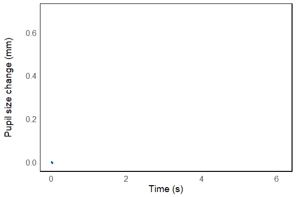

Max Paulus
Speech and Hearing
I am currently a researcher in Hearing Science and Technology with a background in NLP. I use physiological measures such as pupil dilation to understand how normal-hearing and hearing-impaired individuals process degraded speech. The goal is to improve assistive technologies such as hearing aids based on experimental findings.
CV | CodeResearch
Listening effort
I currently study how listeners process degraded speech using physiological tests. For instance, changes in pupil size can indicate listening effort. As shown below, the pupil dilates when speech is played and the peak reflects the processing load associated with retrieving acoustically degraded words.

We work directly with hearing-impaired listeners or simulate hearing loss with signal processing techniques such as noise-vocoding. This technique simulates cochlear implants (CIs) which convey only little spectral detail. That makes it hard to perceive pitch or melody. Below, you can listen to examples from different music genres and speech, and switch between the natural sound and the CI simulation. You may notice that rhythmic music (e.g., Hip Hop) is easier to listen to than classical music which depends mostly on melody.
My research is funded by
Projects
Pupillometry in the ambisonics laboratory
Clinical study conducted at Sonova/Phonak in Switzerland.
In collaboration with hearing-aid manufacturer Phonak, I conducted a clinical study that investigated the feasibility of pupillometry measurements with a 32-loudspeaker setup. We aimed to simulate realistic room acoustics using higher-order ambisonics.
Temporally-modified speech and listening effort
paper presented at Interspeech in Graz.
The second study of my PhD investigated how fast speech can impact listening effort in noise, even when intelligibility levels are comparable to slow speech. Results showed that intelligibility is indeed not the only factor determining difficulty when processing temporally-modified speech, but that cognitive effort has to be taken into account, as well.
Tinnitus: an interactive sound sculpture
exhibited at bang.Prix in Istanbul.
I conducted this art project with a good friend of mine, Betül Aksu, an artist from Turkey. The sculpture is a modified pillow that has been equipped with conductive thread which is connected to an Arduino microprocessor. By interacting with the pilow, visitors experience dynamically changing soundscapes that have been designed to match patient descriptions. The aim of the project is to raise awareness about the intrusiveness of tinnitus in everyday life.
Talker acoustics, intelligibility and effort
journal article published in the The Journal of the Acoustical Society of America.
In my first PhD study, I investigated how talkers can be classified acoustically by means of spectro-temporal features. These characteristics determine intelligibility under a range of degradations including noise and cochlear implant simulations.
Lip-sync for virtual characters
presentation slides and demo video.
During a workshop in Crete, in collaboration with Gerard Llorach, I was able to learn how to control lip-syncing of a virtual character using Javascript. These characters are powerful tools for hearing-aid testing in virtual environments.
Speech recognition for low-resource languages
code and paper published at ACL.
Together with Anjana Vakil, I wrote a tool that allows speech recognition with only sparse data. The idea is that an existing high-resource recognition engine is used alongside a pronunciation lexicon, mapping words in the target language into sequences of sounds in the high-resource language.
Tools
Experimental design
open app: How can the levels of my experimental variable be arranged in a Latin square design?
Linear regression
open app: How is the optimal line fitted to my data?
Simple chat bot in AIML
code and documentation.
For the course "Topics in Human-Computer Interaction", I developed a simple chat bot using the Artificial Intelligence Markup Language (AIML) executable in Python.